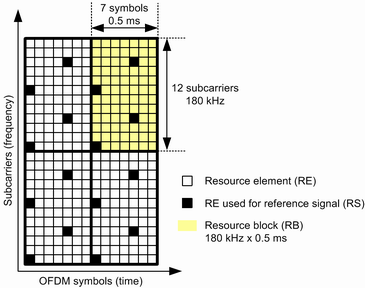
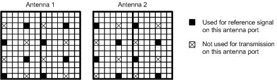
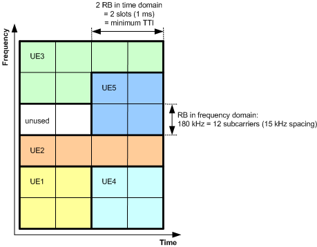
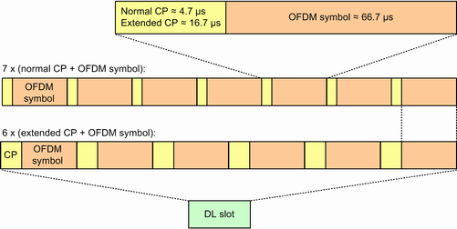
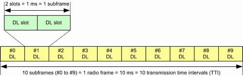
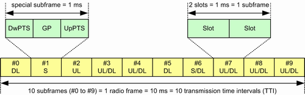

The DL radio resources in an LTE system are divided into time-frequency units called resource elements. In the time domain, a resource element corresponds to one OFDM symbol. In the frequency domain, it corresponds to one subcarrier (see next figure).
For the mapping of physical channels to resources, the resource elements are grouped into resource blocks (RB). Each RB consists of 12 consecutive subcarriers (180 kHz) and six or seven consecutive OFDM symbols (0.5 ms).

The positions of resource elements carrying reference signals (pilots) are standardized and depend on the number of transmit antennas. The preceding figure applies to single-antenna configurations. If more than one transmit antenna is used, each antenna uses different resource elements for reference signals. These resource elements are reserved for one antenna and not used at all by the other antennas. The following figure shows the resource element grid for a two transmit antenna configuration, used for MIMO 2x2.

The smallest resource unit that can be assigned to a UE consists of two resource blocks (180 kHz, 1 ms). The assignment of resources to a UE can vary in time and frequency domain (see next figure).

In the time domain, the additional units radio frame, subframe and slot (containing the OFDM symbols) are defined. A guard time called cyclic prefix (CP) is added to each OFDM symbol. Depending on the duration of the guard time, it is either called normal CP or extended CP and the slot contains either seven or six OFDM symbols.

The radio frame structure depends on the duplex mode. An FDD DL radio frame contains 20 DL slots, grouped into 10 subframes.

A TDD radio frame is also divided into 10 subframes. But for TDD three subframe types are defined: DL subframe (two DL slots), UL subframe (two UL slots) and special subframe. A special subframe contains the fields DwPTS, GP and UpPTS. 3GPP defines several possible special subframe configurations, resulting in different lengths of these fields, see 3GPP TS 36.211, table 4.2-1. The total length of a special subframe equals 1 ms (same length for all subframe types).
The type of subframe number 0, 1, 2 and 5 is fixed. The type of the other subframes depends on the used UL-DL configuration, see Table "Uplink-downlink configuration 0 to 6".

Subframe number | ||||||||||
|---|---|---|---|---|---|---|---|---|---|---|
Configuration | 0 | 1 | 2 | 3 | 4 | 5 | 6 | 7 | 8 | 9 |
0 | D | S | U | U | U | D | S | U | U | U |
1 | D | S | U | U | D | D | S | U | U | D |
2 | D | S | U | D | D | D | S | U | D | D |
3 | D | S | U | U | U | D | D | D | D | D |
4 | D | S | U | U | D | D | D | D | D | D |
5 | D | S | U | D | D | D | D | D | D | D |
6 | D | S | U | U | U | D | S | U | U | D |
D = downlink, U = uplink, S = special subframe | ||||||||||
For eMTC narrowbands, see "Narrowbands".